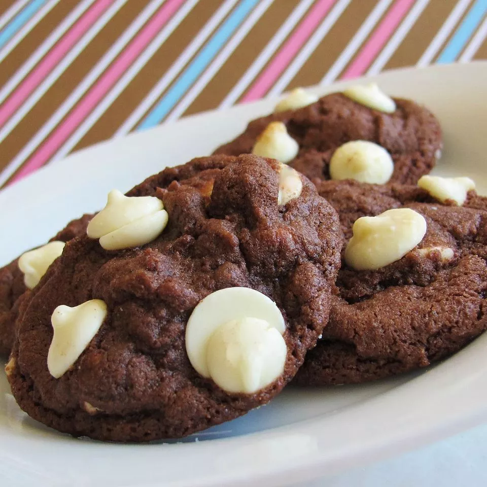

White Chocolate Chip Cookies

Ingredients:
- 2 cups all-purpose flour
- 3/4 cup unsweetened cocoa powder
- 1 teaspoon baking soda
- 1/2 teaspoon salt
- 2 cups white sugar
- 1 cup unsalted butter
- 2 large eggs
- 2 teaspoons vanilla extract
- 1 2/3 cups white chocolate chips
Steps:
- Preheat the oven to 350 degrees F (175 degrees C).
- Combine flour, cocoa, baking soda, and salt in a bowl.
- Beat sugar and butter with an electric mixer in a large bowl until smooth and creamy. Add eggs, one at a time, beating well after each addition. Stir in vanilla. Gradually mix in dry ingredients, then fold in white chocolate chips. Drop by rounded teaspoonfuls onto ungreased baking sheets.
- Bake in the preheated oven until set, 8 to 10 minutes. Remove from the oven, let cool on the baking sheets for 5 minutes, then transfer to a wire rack to cool completely.